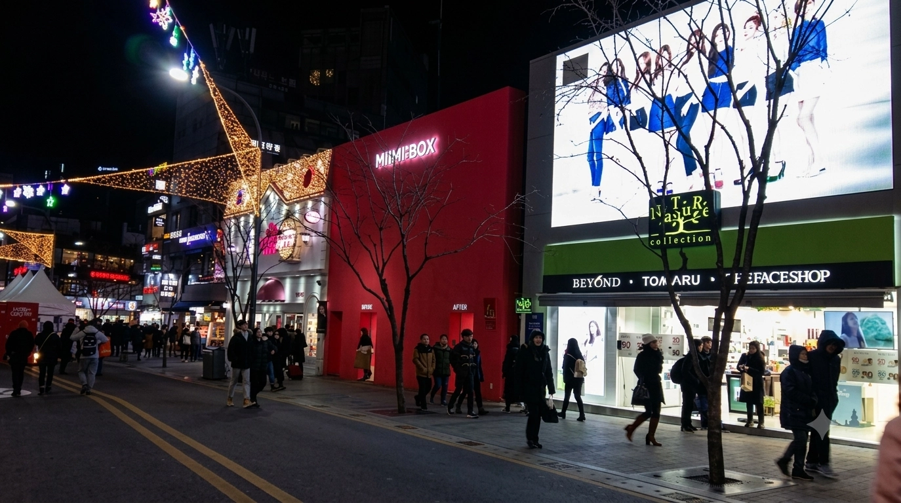

Dónde alojarse en Seoul con presupuesto ajustado en 2026
Una habitación más barata no siempre significa un viaje más barato por Seoul. Hongdae suele ofrecer a quienes viajan con presupuesto ajustado el mejor equilibrio entre variedad de alojamiento, comida y acceso al aeropuerto, mientras que Gongdeok o Sinchon pueden encajar mejor si importan el equipaje, unas noches más tranquilas o una estancia más larga.
Euljiro y Myeongdong suelen costar más por noche, pero en un viaje corto su ubicación céntrica puede reducir el tiempo de transporte y hacer que el resto del día resulte mucho más sencillo.
La pregunta útil no es simplemente «¿Qué zona tiene la habitación más barata?», sino «¿Qué zona me da el menor coste total sin hacer el viaje más difícil?».
Qué hace realmente más barata una estancia en Seoul
El precio de la habitación es solo una parte de una estancia económica. El hotel más barato puede dejar de parecerlo si añade una caminata larga hasta la estación, transbordos repetidos, gastos de aeropuerto o taxis nocturnos.
También importan los pequeños detalles del hotel. El desayuno, la lavandería, la consigna de equipaje y el espacio necesario para dos personas o una familia pueden cambiar el coste final mucho más de lo que sugiere la primera tarifa nocturna.
Por eso esta guía analiza la estancia completa en lugar de clasificar los barrios de Seoul solo por la habitación más barata que esté disponible en ese momento.
Suma los costes que las pantallas de reserva muestran por separado
Calcula el coste real de tu estancia en Seoul
La tarifa nocturna es solo la primera cifra. Un hotel que parece más barato al reservar puede terminar costando más cuando se suma el resto del viaje.
Una comparación útil incluye el precio final de la habitación, el transporte al aeropuerto, los desplazamientos diarios, posibles taxis nocturnos, el desayuno, la lavandería, la consigna de equipaje y cualquier coste de cama extra o segunda habitación.
No todos los viajeros pagarán todos estos conceptos. La idea es detectar cuáles se aplican realmente a tu viaje antes de asumir que la tarifa de habitación más baja es automáticamente la opción más barata.
Zonas económicas de Seoul de un vistazo
Son tendencias por zona, no promesas sobre todos los hoteles. Un alojamiento cerca de una salida complicada puede funcionar peor de lo que sugiere el nombre del distrito.
| Zona | Tendencia del precio de las habitaciones | Acceso al aeropuerto | Turismo por el centro | Comodidad diaria | Riesgo de costes ocultos | Funciona bien cuando |
|---|---|---|---|---|---|---|
| Hongdae | Amplia oferta, con subidas habituales los fines de semana | AREX directo, pero comprueba la distancia del andén al hotel | Buena base en Line 2; los viajes al centro siguen acumulando tiempo | Muchas opciones para comer, cafés y alternativas hasta tarde | Ruido, multitudes y una estación con un recorrido interior largo | Viajeros que usan el tren del aeropuerto y quieren variedad |
| Mapo / Gongdeok | Puede costar más que los distritos universitarios cercanos | AREX en Gongdeok y buenas conexiones urbanas | Lo bastante céntrico para reducir transbordos repetidos | Comida y servicios prácticos, con noches más tranquilas | La oferta hotelera es más limitada; las salidas siguen siendo importantes | Mucho equipaje y rutinas más tranquilas |
| Sinchon | A menudo competitivo para habitaciones sencillas y estancias largas | Normalmente requiere una conexión o transbordo en Hongdae | Line 2 ayuda, pero los días de aeropuerto son menos directos | Comidas a precios de zona universitaria y servicios básicos para estancias largas | La calidad de los alojamientos y el acceso con equipaje varían | Estancias largas centradas en el valor diario |
| Euljiro | La ubicación céntrica puede implicar una tarifa nocturna más alta | Suele ser necesario planificar un transbordo o el autobús del aeropuerto | Reduce desplazamientos repetidos entre muchos puntos turísticos principales | Buen transporte y comida, con diferencias de una manzana a otra | Pasadizos subterráneos y salidas con condiciones desiguales | Itinerarios céntricos y cortos |
| Myeongdong | A menudo más alto, especialmente en ubicaciones cómodas | Las opciones de autobús del aeropuerto pueden simplificar algunos viajes | Volver entre compras y turismo resulta fácil | Los servicios para visitantes y las compras están cerca | Multitudes, escaleras y una salida equivocada con equipaje | Primeros viajes cortos y compras |
| Dongdaemun | Una oferta variada puede generar precios competitivos | Compara el transbordo exacto en autobús o tren | Útil para planes del este y del centro | Las compras hasta tarde ayudan en algunos itinerarios | Grandes cruces y una estación compleja | Visitantes repetidores cuyo viaje gira en torno a las compras |
El distrito más barato no siempre produce el viaje más barato. Compara la entrada exacta del hotel, la salida de la estación, la ruta al aeropuerto, las opciones de lavandería, la consigna de equipaje y el total final de la OTA.
Hongdae

Hongdae suele ser el punto de partida más fácil para un viaje económico porque combina una gran oferta de alojamiento con comida informal, vida nocturna y servicio directo de AREX All-Stop desde Incheon Airport. Line 2 también facilita llegar a muchas partes de Seoul sin rutas diarias complicadas.
La habitación más barata no es automáticamente la mejor oferta de Hongdae. Los hoteles alrededor de las calles de vida nocturna más concurridas pueden ser ruidosos, y un alojamiento que parece cerca de Hongik University Station todavía puede implicar una larga caminata por una estación muy grande. Esto se nota especialmente al llegar con equipaje.
Para quienes buscan comida económica, noches activas y una conexión sencilla con el aeropuerto dentro del mismo barrio, Hongdae sigue siendo una de las opciones económicas más sólidas de Seoul.
Leer la guía de Hongdae →Mapo / Gongdeok

Mapo y Gongdeok pueden ofrecer mejor valor global que una habitación más barata en otro lugar cuando importan el equipaje y los desplazamientos al aeropuerto. Gongdeok tiene servicio directo de AREX All-Stop y el barrio suele ser más tranquilo por la noche que la cercana Hongdae.
La oferta de alojamiento no es tan amplia como en Hongdae y los principales lugares turísticos no están justo al salir del hotel. A cambio, los días de llegada y salida son más prácticos y hay muchos restaurantes de uso cotidiano cerca.
La propia estación es grande, así que siguen importando la salida exacta y el acceso final al hotel. Una habitación que cueste un poco más puede merecer la pena si evita una ruta difícil con equipaje o transbordos repetidos.
Leer la guía de Mapo / Gongdeok →Sinchon

Sinchon merece consideración cuando el viaje es más largo y los gastos cotidianos pesan más que estar junto a las principales atracciones. La zona universitaria tiene comidas asequibles, supermercados y una gran oferta de alojamientos prácticos, mientras que Line 2 mantiene Hongdae y otras partes de Seoul fáciles de alcanzar.
Es menos cómodo para viajes directos al aeropuerto que Hongdae o Gongdeok, por lo que el ahorro tiene más sentido cuando la estancia es lo bastante larga para que los menores costes de comida, lavandería o habitación se noten durante varios días.
La calidad de los hoteles puede variar aquí más que en algunos distritos turísticos principales, lo que hace que la habitación y el alojamiento concretos importen más que el nombre del barrio por sí solo.
Euljiro y Myeongdong: pagar más para moverse menos
Euljiro y Myeongdong no suelen ser los primeros lugares donde buscar la tarifa de habitación más baja. Su ventaja es la ubicación. En un viaje corto, estar más cerca de las visitas del centro, las compras y las comidas puede reducir los desplazamientos diarios y facilitar que quepan más cosas en cada jornada.
Myeongdong es especialmente sencillo para quienes visitan Seoul por primera vez, mientras que Euljiro puede ofrecer un ambiente más mezclado entre lo local y el centro urbano. Ambos pueden tener sentido económico cuando una tarifa ligeramente mayor sustituye desplazamientos diarios más largos o taxis adicionales.
Esto es especialmente relevante en una estancia de tres o cuatro noches, cuando el tiempo perdido en transporte puede importar casi tanto como la diferencia de precio por noche.
Leer la guía de Myeongdong →Errores fáciles de cometer al reservar alojamiento económico en Seoul
-
Elegir la habitación más barata lejos de la ruta diaria
Una tarifa nocturna más baja puede desaparecer entre tiempo extra de desplazamiento y costes de transporte cuando la mayor parte del viaje ocurre al otro lado de la ciudad.
-
Tratar todas las salidas de estación como si fueran igual de cómodas
Las estaciones de metro grandes pueden tener salidas muy separadas entre sí, y algunas rutas incluyen escaleras, pasadizos subterráneos o largos recorridos interiores.
-
Olvidar la necesidad real de habitación
Una familia o un grupo puede necesitar una cama extra o una segunda habitación aunque el primer resultado de búsqueda parezca barato. La comparación real empieza por la distribución de habitación que sí se puede reservar.
-
Planificar una llegada tardía con el transporte diurno en mente
Un vuelo que llega tarde por la noche puede convertir una ruta sencilla desde el aeropuerto en un trayecto en taxi. La hora de llegada puede importar más de lo que sugiere el mapa diurno.
-
Comparar tarifas reembolsables y no reembolsables como si fueran iguales
Una reserva no reembolsable más barata implica un riesgo distinto al de una tarifa flexible. La diferencia de precio solo tiene sentido cuando las condiciones de cancelación forman parte de la decisión.
Preguntas frecuentes sobre alojamiento económico en Seoul
¿Es Hongdae la zona más barata para alojarse en Seoul?
No siempre. Hongdae suele tener una amplia oferta de alojamientos de menor precio y comida económica, pero los precios cambian según la fecha y la ubicación. Su verdadera ventaja para un viaje con presupuesto ajustado es combinar variedad de habitaciones, Line 2 y acceso directo por AREX All-Stop.
¿Merece la pena pagar más por Myeongdong?
Puede merecerlo en una primera visita corta. Myeongdong suele costar más que Hongdae o Sinchon, pero su ubicación céntrica puede reducir los desplazamientos diarios y facilitar las visitas.
¿Qué zona económica es más fácil desde Incheon Airport?
Hongdae y Gongdeok son especialmente útiles porque ambas tienen servicio directo de AREX All-Stop. La mejor opción depende del recorrido hasta el hotel, el equipaje y de si prefieres un barrio animado o más tranquilo.
¿Qué zona es más fácil con equipaje?
Gongdeok y Hongdae son dos opciones sólidas, pero importan la salida exacta de la estación y el acceso final al hotel. Una conexión ferroviaria directa sirve de menos si el tramo final incluye escaleras difíciles o un recorrido largo por la estación.
¿Es Sinchon más barato que Hongdae?
Sinchon puede ofrecer una buena relación calidad-precio, sobre todo en estancias largas y cuando importan los gastos cotidianos de comida, pero no existe una regla de precios permanente. Hongdae suele tener una oferta de alojamiento más amplia y mejor acceso al aeropuerto.
¿Es Gongdeok una buena zona para viajar con presupuesto ajustado?
Sí, especialmente cuando importan la comodidad para ir al aeropuerto, el equipaje y unas noches más tranquilas. Puede que no tenga siempre la tarifa de habitación más baja, pero un transporte más sencillo puede hacer que la estancia tenga buena relación calidad-precio en conjunto.
¿Dónde conviene alojarse si necesito lavandería?
Sinchon es útil para estancias largas con presupuesto ajustado porque es fácil encontrar servicios cotidianos, aunque hay opciones de lavandería por todo Seoul. La solución más práctica puede ser un hotel con lavandería de autoservicio o una lavandería cercana.
¿Merece la pena alojarse más lejos del metro para ahorrar?
Normalmente solo cuando el ahorro es significativo. Una caminata larga hasta la estación se nota mucho más con equipaje, mal tiempo o varios días completos de turismo.
¿Un hostel es siempre más barato que un hotel económico?
No necesariamente para todos los viajeros. Las habitaciones privadas de hostel pueden acercarse a los precios de hotel en fechas de alta demanda, y dos personas a veces encuentran mejor valor en una habitación de hotel sencilla.
¿Debería comparar varias webs de reserva?
Sí, porque el tipo de habitación, las condiciones de cancelación y el total final pueden variar. La comparación útil es la misma habitación con condiciones similares, no simplemente el primer precio más bajo que aparece.
¿Qué funciona mejor para una primera visita corta?
Myeongdong o Euljiro pueden tener sentido incluso con una tarifa nocturna más alta porque facilitan las visitas del centro. Hongdae sigue siendo atractivo cuando pesan más el acceso al aeropuerto y la comida de menor precio.
¿Deberían los viajeros con presupuesto ajustado alojarse fuera del centro de Seoul?
A veces, pero la distancia por sí sola no garantiza una mejor relación calidad-precio. Una zona exterior más barata tiene sentido cuando la ruta de transporte sigue siendo sencilla y el ahorro compensa de verdad el tiempo extra de desplazamiento diario.
La opción económica no siempre es la habitación más barata
Hongdae sigue siendo el lugar más fácil para empezar para muchos viajeros con presupuesto ajustado porque alojamiento, comida, vida nocturna y acceso al aeropuerto se combinan en una sola zona. Gongdeok gana peso cuando importan el equipaje y los días de aeropuerto, mientras que Sinchon puede funcionar bien para estancias largas con menores gastos cotidianos.
Euljiro o Myeongdong pueden costar más por noche, pero en un viaje corto ese sobreprecio puede devolverte tiempo y reducir los desplazamientos diarios. Por tanto, la estancia más barata en Seoul es la que mantiene asequible el coste total sin hacer más difícil cada día.